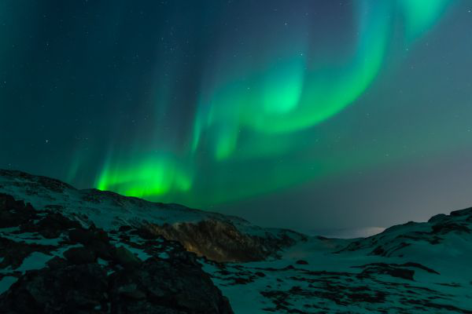
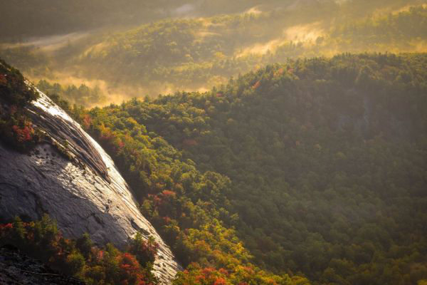

Hey! People are looking at your profile. Find out who.
Social Media Template
John Doe
1 min ago
A breathtaking contrast of nature is captured, with vibrant green lights dancing across a starry sky while golden sunlight bathes a misty mountain valley. The icy landscape glows under the celestial aurora, creating a magical and surreal scene. Meanwhile, warm autumn hues and rolling fog add depth and tranquility to the sunlit wilderness.

Jane Doe
16 min ago
Nature’s beauty is showcased in a striking contrast, where vivid green lights shimmer in the night sky while golden sunlight illuminates a mist-covered mountain valley. The frosty terrain glows beneath the enchanting aurora, creating an ethereal and mesmerizing sight. At the same time, rich autumn colors and drifting fog bring a sense of warmth and serenity to the sunlit landscape.
Angie Jane
32 min
Have you seen this?

This image showcases a stunning mountain landscape bathed in golden sunlight, possibly during sunrise or sunset. A vast expanse of dense, green forest stretches across rolling hills, with hints of autumn colors adding warmth and depth. Mist drifts gently over the treetops, creating a dreamy and serene atmosphere, while a rugged rock face on the left catches the sunlight, enhancing the dramatic contrast between light and shadow.